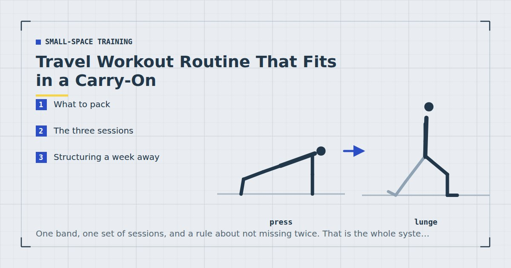

Small-Space Training
Travel Workout Routine That Fits in a Carry-On
One band, one set of sessions, and a rule about not missing twice. That is the whole system, and it survives most trips intact.

Travel is the most reliable destroyer of training routines, and usually not for the reason people assume. It is rarely the lack of a gym. It is that nothing was decided in advance, so every evening becomes a fresh negotiation with yourself.
A travel routine is mostly a set of decisions made before you leave.
What to pack
A long resistance band. The only item genuinely worth carrying. It weighs almost nothing, takes the space of a pair of socks, and solves the pulling pattern — which is the one thing hotel rooms cannot provide. Anchored in a door hinge it covers rows, pulldowns and face pulls. Types and strengths are in the resistance bands guide.
Trainers, if you have room. Useful for walking as much as training, and they make split squats on a slippery hotel floor considerably safer.
That is the list. Suspension trainers, folding mats and travel dumbbells all exist and all fail the test of being worth their space and weight for a trip. A towel from the bathroom substitutes for a mat adequately.
The three sessions
Three full-body sessions, rotated. Full-body rather than a split, because on the road a missed day is likely and a split can leave a whole region untrained for a fortnight — the reasoning is in full body vs split routines.
Session A — 20 minutes
- Bulgarian split squat, rear foot on a chair — 3 × 8–12 each leg
- Push-up — 3 × 10–15
- Band row — 3 × 12–15
- Glute bridge — 3 × 15
- Plank shoulder tap — 3 × 30 seconds
Session B — 20 minutes
- Reverse lunge — 3 × 10–12 each leg
- Pike push-up — 3 × 8–12
- Band pulldown — 3 × 12–15
- Single-leg Romanian deadlift — 3 × 10 each side
- Dead bug — 3 × 10 each side
Session C — 10 minutes
The minimum. Split squats, push-ups, band rows — two sets each. For the evening you land at eleven, and the version of this that matters most, because it is the one that stops a trip becoming a gap.
Room-specific detail on using the bed, chair and desk is in the hotel room workout.
Structuring a week away
Three sessions, all full-body. Regardless of what you do at home.
Train in the morning where possible. Not because mornings are physiologically better, but because evenings on a work trip are the least reliable time you own — dinners overrun and nine o'clock competes with wanting to sleep. The trade-offs are in morning vs evening workouts.
Drop the difficulty deliberately. Use variations one rung easier than at home and stop sets three or four repetitions short of failure. Sleep disruption measurably degrades training performance,1 and hard training on four hours of sleep buys fatigue rather than adaptation.
Walk. The one genuinely easy win while travelling. Unfamiliar cities are walkable and it covers the aerobic half of adult activity guidance,2 which the strength sessions do not.
Never miss two planned sessions in a row. One missed session while travelling is irrelevant. Two is where routines start unravelling, and returning from a fortnight having done nothing is what turns a trip into a six-week gap — the mechanism is in beating the six-week drop-off.
Longer trips
Beyond about three weeks, treat it as normal training rather than maintenance. Find something to pull against properly — a park, a playground, a gym day pass — because a month of band-only pulling will leave the back undertrained.
Also start progressing again. On a two-week trip, maintaining is the correct goal; on a two-month posting, running maintenance sessions for eight weeks is simply losing eight weeks. Move back to your normal programme structure, per the three-day split.
What to skip
Hotel gyms, usually. Not always, but a room full of treadmills and a broken cable stack is rarely better than twenty minutes in your room, and the walk down plus waiting for equipment is friction you do not need.
New exercises. A trip is a bad time to learn a movement. Use what you already know.
Personal bests. Nothing about travel conditions favours maximal effort. Maintenance is the goal and it is a legitimate one.
Guilt about the days you miss. Two or three sessions in a week away is a good outcome, not a failure.
Coming home
Resume your normal programme at the week you left off, or one week earlier if the trip was long. Do not try to make up missed volume by doubling sessions — that produces a workout you recover badly from and raises the chance of missing the next one.
If the trip was long enough that you lost real ground, the structured approach is in how to restart after missing two weeks. In practice, a week or two away costs very little, and most people find the first session back easier than they feared.
Time zones and training
Crossing several time zones affects training more than the travel itself does, and it is worth planning around rather than pushing through.
The practical pattern most people find: the first day after a long eastward flight is the worst, westward is easier, and things settle within roughly a day per time zone crossed. Sleep is the mechanism, and its effects on training performance and recovery are reasonably well documented,1 so the sensible response is to treat the first day or two as movement rather than training. A twenty-minute walk in daylight does more for you at that point than a strength session would, and daylight exposure is one of the few things with a plausible effect on resynchronising your body clock.
From day three onward, train normally but at reduced difficulty. The temptation is to compensate for the missed days by going harder, which is exactly wrong: you are training on a sleep deficit that has not fully cleared, and the session quality will be poor regardless of effort.
Eating on the road
Worth a brief note because it interacts with the training more than people expect.
Protein intake is the thing most likely to fall on a trip, since hotel breakfasts, airport food and client dinners tend to be carbohydrate-heavy and unpredictable. Meta-analytic evidence shows protein intake supports muscle retention alongside resistance training,4 and a fortnight of training on markedly less of it is a fortnight where the training does less than it should.
Nothing elaborate is required. Prioritise a protein source at each meal you control, which is usually breakfast, and accept whatever the rest of the day brings. The practical ranges are in how much protein you need for home workouts.
Where to go next
For the room-by-room detail, see the hotel room workout. For training in work clothes between meetings, see the office workout.
Frequently asked questions
What should I pack for working out while travelling?
A long resistance band, and trainers if you have room. The band weighs almost nothing and solves the pulling pattern, which is the one thing hotel rooms cannot provide. A bathroom towel substitutes for a mat adequately.
How do I keep training while travelling for work?
Decide the sessions before you leave, use three full-body rotations rather than a split, train in the morning where possible, and protect the rule of never missing two planned sessions in a row.
Should I use the hotel gym?
Often not worth it. A room with treadmills and a broken cable stack is rarely better than twenty minutes in your own room, and the trip down plus waiting for equipment is friction you do not need.
How hard should I train while travelling?
Easier than at home. Use variations one rung down and stop sets three or four repetitions short of failure. Sleep disruption measurably degrades training performance, so hard sessions on poor sleep buy fatigue rather than adaptation.
What should I do when I get home from a trip?
Resume your normal programme at the week you left off, or one week earlier if the trip was long. Do not double up sessions to make up missed volume — that produces a workout you recover badly from.
Is two workouts a week enough while travelling?
Yes. Two sessions a week meets the adult recommendation for muscle-strengthening activity and is comfortably enough to maintain what you have built. Maintenance is the correct goal on a short trip.
Sources and further reading
- Bonnar D, Bartel K, Kakoschke N, Lang C. “Sleep Interventions Designed to Improve Athletic Performance and Recovery: A Systematic Review of Current Approaches.” Sports Medicine, 2018;48(3):683–703. PubMed.
- World Health Organization. WHO Guidelines on Physical Activity and Sedentary Behaviour. 2020.
- NHS. Strength and Flex exercise plan.
- Morton RW, Murphy KT, McKellar SR, et al. “A systematic review, meta-analysis and meta-regression of the effect of protein supplementation on resistance training-induced gains in muscle mass and strength in healthy adults.” British Journal of Sports Medicine, 2018;52(6):376–384. PubMed.
- Schoenfeld BJ, Ogborn D, Krieger JW. “Dose-response relationship between weekly resistance training volume and increases in muscle mass: A systematic review and meta-analysis.” Journal of Sports Sciences, 2017;35(11):1073–1082. PubMed.
Comments
Comments are not enabled yet. Add a hosted comment embed (Disqus, Commento, Giscus) inside this container when you are ready.